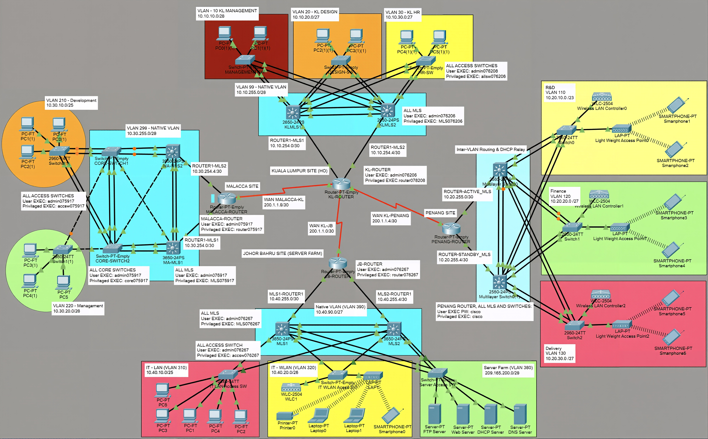
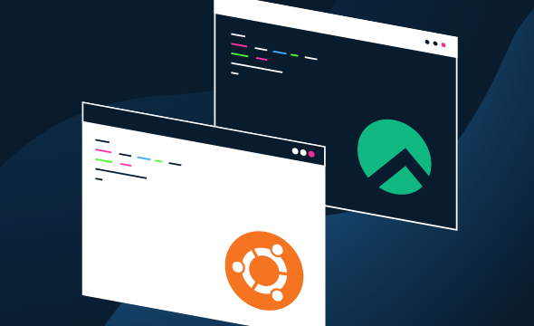
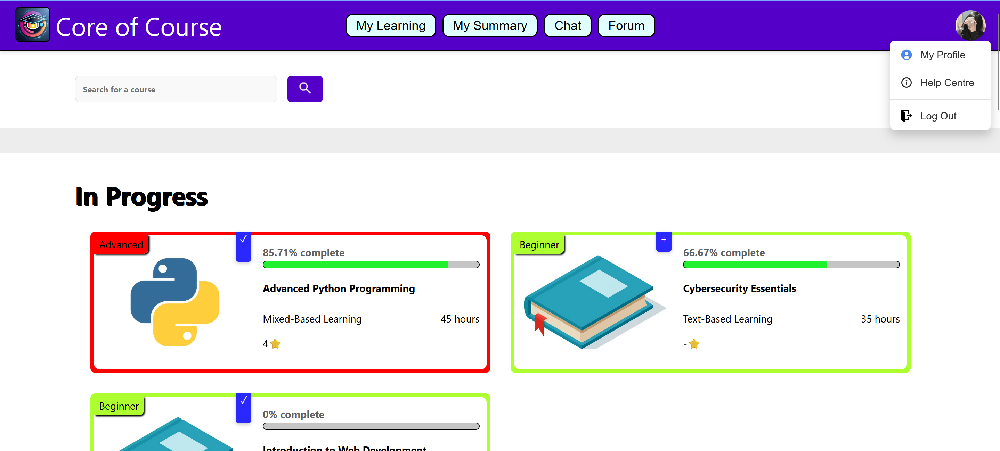
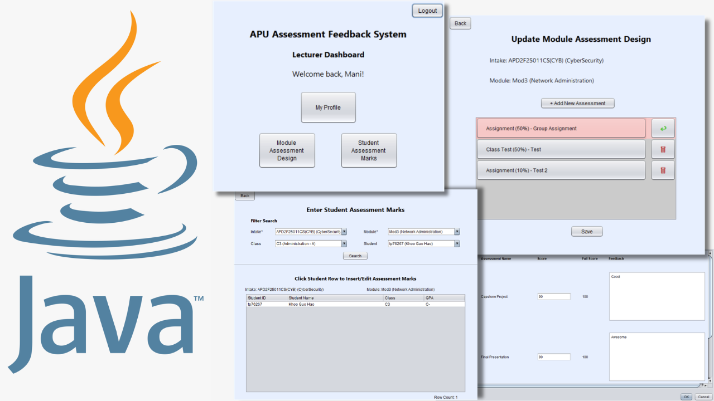

Industry | Web/Software
Finspark Administration Website
Internship work - analyzed existing workflows, designed solution, and developed a Node.js web application
Projects & Engineering Work
Computer Science student specializing in backend development, networking, and cybersecurity. Experienced in designing and deploying production-use web applications for SMEs, building multi-site network topologies, and configuring server infrastructures in simulated and real-world environments.
Industry | Web/Software
Internship work - analyzed existing workflows, designed solution, and developed a Node.js web application

Networking
Designed and simulated a multi-site network for a four-branch organization

Server Administration | Networking
Server and network administration project focused on a server-client architecture

Web/Software
A website developed to provide online courses for undergraduate students who are interested in self-learning

Web/Software
A software that allows lecturers to manage score and feedback according to the subject assessments, deliver it to students timely, auto-grading based on marks allocation, and produce feedback reports
Cybersecurity & Digital Forensics
Conducted data acquisition, analysis (root cause analysis), and reporting to identify admissible evidence of malware/malicious activities on an infected machine (Windows 10 VM)